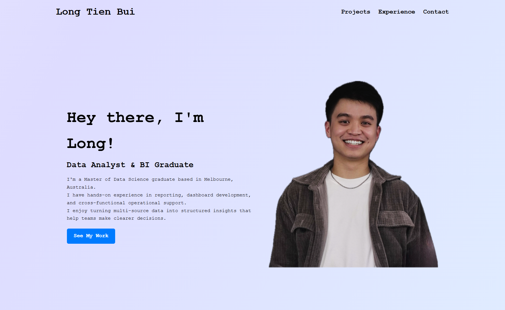

Data Science Remuneration Trends — R Shiny Dashboard
Data Visualisation Developer · FIT5147, Monash University | Aug 2023 – Oct 2023

Overview
An interactive narrative visualisation built in R Shiny that unpacks the multifaceted landscape of Data Science compensation in 2023. The dashboard was designed to challenge common misconceptions about the profession and give aspiring, current, and educational stakeholders a coherent view of where the field is heading.
What was the challenge?
Data Science is one of the most in-demand careers, yet public understanding of salaries, specialisations, geographical distribution, and remote-work norms is fragmented and often misleading. The challenge was to turn a large remuneration dataset into a clear, engaging story that audiences with different goals could all get value from.
What I did
- Explored and cleaned a 2023 Data Science salary dataset, identifying key dimensions — job title, experience level, country, remote ratio, and salary.
- Designed a narrative-driven Shiny dashboard with coordinated views: donut charts for job-title distribution, tree maps for remote-work ratios, choropleth maps for global distribution, and a word cloud for required skills and qualifications.
- Applied visualisation design principles — visual hierarchy, colour consistency, and interactive filters — so users could explore the data at their own pace.
- Framed the dashboard around four key messages: job titles & specialisations, geographical spread, remote-work prevalence, and salary disparities.
- Tailored the experience to three audiences: aspiring data scientists choosing a major, working data scientists benchmarking their market, and educational institutions shaping curriculum.
Tools & skills
R · Shiny · ggplot2 · Data Wrangling · Narrative Visualisation · Dashboard Design · Data Storytelling
Outcome
The final dashboard translated a dense salary dataset into a clear, interactive story that helps users make informed decisions — from students choosing a specialisation, to professionals planning their next move, to institutions aligning their programs with real industry demand.
← Back to Projects